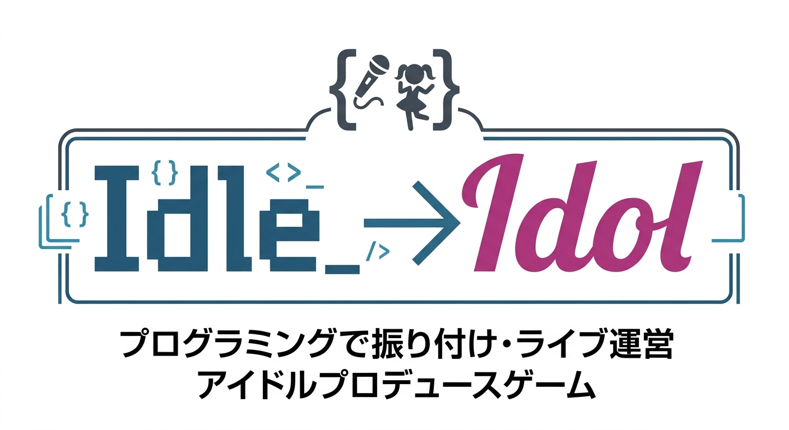
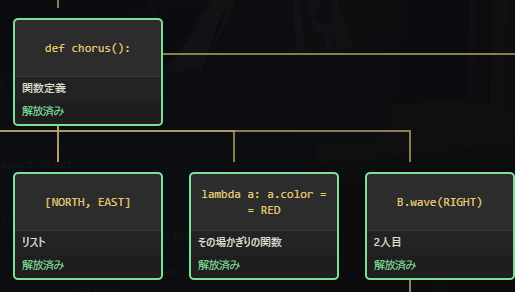
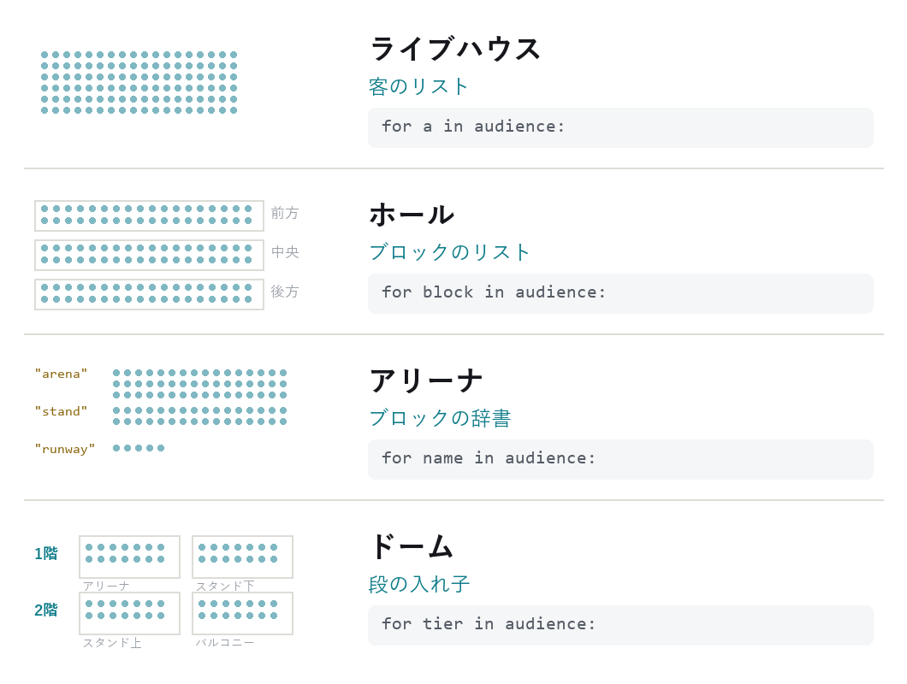
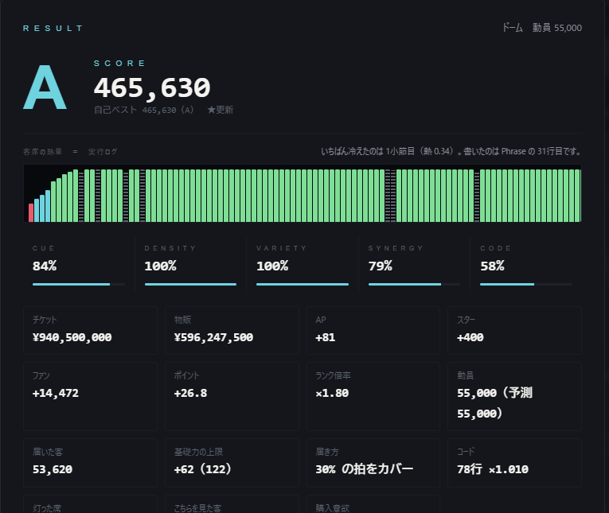
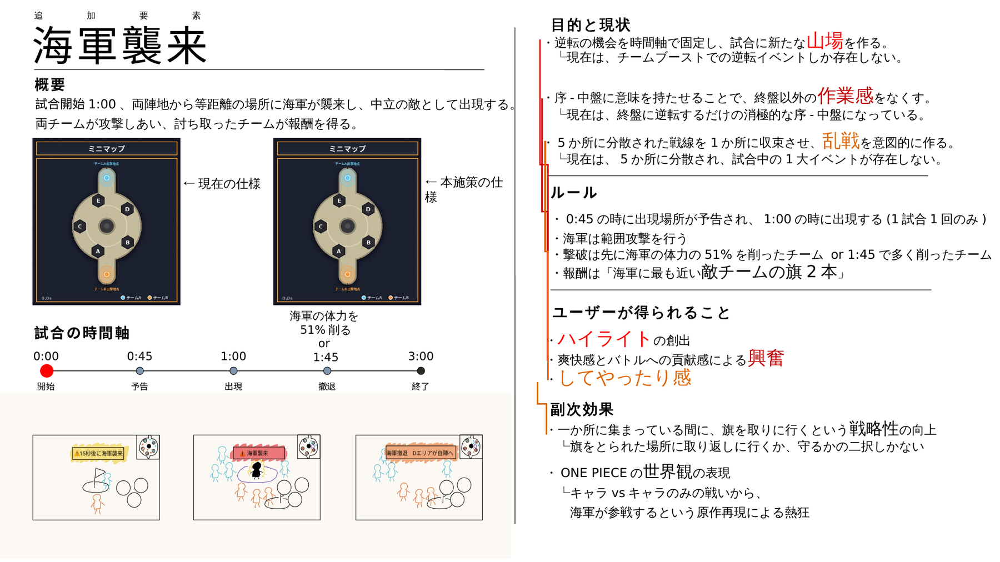
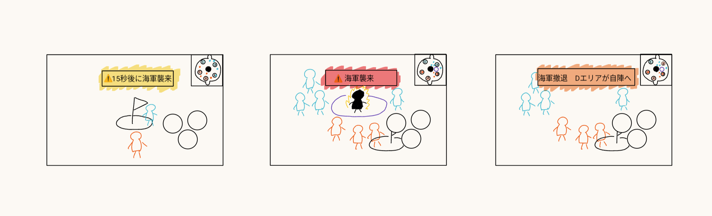

一度その場に来た人が、 次も来たくなる理由をつくる。
Contents / 目次
Contents
すべての作品を貫く一文は 「思い込みで作らない。現場を見て、事実で測り、作り替える。」 です。 並び順は、この主張を段階的に証明する順序になっています。
01 / 自己紹介
Profile
一度その場に来た人が、次も来たくなる理由をつくる。
プログラミングを学ぶ情報系の学生でありながら、8年間ライブに、4年間体験型謎解きイベントに通ってきました。 関心はずっと同じところにあります。その場にいた人にしか起きない感情は、どうすれば次につながるのか。
4年間イベントに通って、良かったのに二度と行かなかった公演と、何度も通った公演の両方を経験しました。 差は内容の質ではありませんでした。次に来る理由が、自分の中に残ったかどうかでした。
逆の経験もあります。予習をせずに友人に誘われて行った音楽ライブで、会場は明らかに熱いのに、 周りが何に反応しているのか最後まで分かりませんでした。つまらなかったのは内容ではなく、 私がその熱に入る入口を持っていなかったからです。同じ会場で、隣の人は人生で一番の時間を過ごしている。 あの疎外感を知っているから、初めて来た人が置いていかれない設計を考えたいと思っています。
この関心は、遊びの設計と地続きだと考えています。 ゲームも、買われて終わりではなく、遊ぶ人が居続けて初めて成立するからです。
仕事の進め方
現場を見る前に施策を作らないことを原則にしています。 大学のITサービスデスクで、思い込みで作った仕組みが誰にも使われなかった経験があるからです（→ 03）。 以来、事実で測ってから作り替えることを繰り返しています。
このポートフォリオに載せた作品は、すべてその過程を残してあります。 完成した形だけでなく、何を指摘され、何をどう変えたかを併記しました。
History / 経歴
| 2024.04 | 東京理科大学 創域理工学部 情報計算科学科 入学 |
|---|---|
| 2024.04– | 株式会社モンテローザ（山内農場） |
| 2025.04– | 基礎スキーサークル 会長（約100名） → 02 |
| 2025.10– | 東京理科大学アカデミックパートナーズ株式会社 ITサービスデスク → 03 |
Certification / 資格
| Ski | 公益財団法人全日本スキー連盟 基礎スキー技能検定（バッジテスト）1級 |
|---|---|
| License | 普通自動車第一種運転免許 |
02 – 03 / 経験
Experience
組織のなかで、慣習を疑い、事実を取り、人が残る形に作り替えた記録です。
02 / 経験
基礎スキーサークル 会長
| 役割 | 会長（サークル規模 約100名） |
|---|---|
| 期間 | 2025年4月 〜 現在 |
| 課題 | 新入生の離脱率が高い |
課題
新入生が定着しない状態が続いていました。 ただし「雰囲気が悪いから」「練習がきついから」といった推測で動くと、 またずれた施策を打つことになります（→ 03 で経験済み）。
この経験から
続いてきた仕組みを疑い、人が離れない形に作り替えられることが自分の強みだと考えています。 慣習をそのまま続けるのでも、感覚で壊すのでもなく、情報を取ってから、人が残る形を選ぶ。 02・03の企画で「指摘を受けて作り替える」ことができるのも、同じ姿勢です。
サークル運営では、OB合宿の管理も年次テンプレート化しました。 毎年ゼロから作り直していた運営資料を、複製して使う形に整えています。
やったこと
Step 01
全員にアンケートを実施した
推測ではなく事実を取りに行きました。全員に回答してもらい、何が起きているかを確認しました。
Step 02
原因を特定した
分かったのは、恒例行事が上級生中心の内容になっていることでした。 新入生は行事のあいだ、役割を持てないままその場にいることになります。 楽しめないのではなく、居場所が無い状態でした。
Step 03
恒例行事を、新入生が主役になる企画へ置き換えた
廃止案には強い反対が出ました。長く続いてきた行事だったからです。 「廃止」ではなく「新入生が主役になる企画への置き換え」であると説明を重ね、合意を得ました。 何を失い、何を得るのかを具体的に示すことを繰り返しました。
03 / 経験
ITサービスデスク
東京理科大学アカデミックパートナーズ株式会社
| 役割 | ITサービスデスク（学生スタッフ 約60名の体制） |
|---|---|
| 期間 | 2025年10月 〜 現在 |
| 課題 | 対応品質にばらつきがある |
このポートフォリオで一番の失敗談です。同時に、他の全ページの前提でもあります。
失敗 ── 誰も開かなかったマニュアル
学生スタッフ約60名の対応品質にばらつきがあると考え、対応手順をまとめたマニュアルを一人で作成しました。 網羅性には自信がありました。しかし1か月経っても、ほとんど誰も開いていませんでした。
なぜ使われなかったか
現場で確認して分かったのは、問題が内容ではなく形にあることでした。 スタッフが対応するのは、目の前に相談者が立っている状況です。 数十ページから検索する余裕はなく、近くの先輩に聞くほうが速い。 どれだけ正確でも、その状況では選ばれません。
つまり私は、正しい情報を作ったつもりで、使われる状況を一度も見ていなかったのです。 努力の方向自体が誤っていたと突きつけられました。
作り直し
| Before | After | |
|---|---|---|
| 形式 | 数十ページ・目次から検索 | 頻出質問だけを1枚に集約 |
| 切り分け手順 | 文書で記述 | 口頭で伝えられる長さに整理 |
| 検証 | なし | 同僚数名に試験運用してもらい、詰まる箇所を都度修正 |
- 問い合わせ記録を集計・分類した
- 頻出する質問だけを1枚に集約した
- 迷ったときの切り分け手順を、口頭で伝えられる長さに整えた
- 同僚数名に試験運用してもらい、詰まる箇所を都度修正した
The original one-page sheet is confidential and cannot be shown.
The table above reproduces its structure only.
成果物の価値は、完成度ではなく、使われる現場での再現性で決まる。
以来、現場を見る前に施策を作らないことを原則にしています。 このポートフォリオに載せた作品で「指摘を受けて作り替える」過程を必ず残しているのも、同じ理由です。
その後 ── 読者と状況が変われば、最適な形も変わる
同じ職場で、全学生・教員向けの公開マニュアルを執筆する機会がありました。 東京理科大学 情報システム課が公開する『Microsoft 365 多要素認証(MFA)設定マニュアル』（全31ページ）のうち、 パスキー登録手順の章（8ページ）を新規に執筆しました（2026年9月28日 公開）。
こちらは「1枚」にしていません。読者と、読む状況が違うからです。
| 1枚マニュアル | パスキー登録の章 | |
|---|---|---|
| 読者 | サービスデスクのスタッフ | 全学生・教員 |
| 状況 | 目の前に相談者がいる。即答が要る | 自席で、一度だけ、手順通りに設定する |
| 最適な形 | 1枚・口頭で言える長さ | 省略しない・画面ごとに図解 |
同じ「マニュアル」でも、引くための文書と、辿るための文書は別物です。 1枚にすることが正解なのではなく、使われる状況に合わせることが正解でした。
執筆時に意識したこと
- 2端末（モバイル端末／別端末）を使う手順なので、どちらで操作するかを毎ステップ明記
- Windows / Mac の分岐を並記
- 環境によって表示されない画面があるため「※画面は表示されない場合があります」を明示
- 詰まる箇所に先回りする（例：「パスワードの右側にある『変更』からパスワード変更は行わないでください。ここで変更すると一部の学内システムが使用できなくなります」）
「その画面の前に立った人が、どこで詰まるか」から書きました。 1枚マニュアルで学んだことを、形を変えて使っています。
04 / 制作物
Products
人から聞いた困りごとを、自分で形にして、使われるところまで持っていくことをやっています。 「動いた」ではなく「使われる形になったか」を基準にしています。
01 Chrome Extension
PDF 一括ダウンローダー
「講義で配布されるPDFを、ひとつずつダウンロードするのが大変」
きっかけ
大学の友人から聞いた一言でした。 講義資料はLMS（Moodle）に置かれていますが、1件ずつクリックして保存するしかありません。 1つの講義で数十件になることもあり、それを毎週くり返している。
聞いたときに「これは作れるのでは」と思いました。 誰かが作ってくれるのを待つ話ではないと感じたので、実際に作りました。
自分が困っていたわけではありません。 困っている人の話を聞いて、その状況を想像するところから始めたのが、この制作物の出発点です。
作ったもの
表示中のページからPDFのリンクをまとめて見つけ出し、選んだものを一括で保存する Chrome拡張機能です（Manifest V3）。
| 検出できるもの | 中身 |
|---|---|
| リンク | ページ内のPDFへのリンク |
| 埋め込み | embed / object / iframe の中のPDF |
| ビューア | 閲覧画面のURLから実体のPDFを取り出す |
| ソース | JavaScriptで組み立てられている一覧 |
| 判定済 | 拡張子が無いリンクを、実際に確かめて判定 |
一番の壁は「拡張子が .pdf じゃない」ことだった
Moodleの資料リンクは /mod/resource/view.php?id=… という形で、
クリックして初めて実体のPDFに転送されます。
つまりリンクを見ただけでは中身がPDFか分かりません。
単純に「.pdf で終わるリンクを集める」だけでは、肝心の講義資料が1件も取れませんでした。
そこで、リンクに付いているPDFアイコンと配信URLの形から資料リンクを見分け、 転送を追いかけて実体のURLとサーバー側のファイル名（日本語を含む）まで 取得するようにしました。
便利にすることが、使う人の不利益になってはいけない
Moodleは閲覧をログに残します。設定によっては「活動完了」が自動で付きます。 全リンクを手当たり次第に叩く作りにすると、 本人が見ていない小テストや課題まで「見たこと」になってしまう。
そこで資料以外のリンクは叩かない設計にしました。 頼まれてもいない副作用を勝手に起こさないことが、 便利さより先に来ると考えています。
権限も最小限にしました。全サイトへのアクセス権限は任意にしてあり、 ページをまたいで探す機能を使うときだけ、そのサイトに限って許可を求めます。 使わなければ付与されません。
02 Chrome Extension
表をCSVに保存
1本目で作りかたが分かったので、同じ考えかたで2本目を作りました。 ページ内の表を見つけてCSVやExcel形式で保存するものです。 ここで、無料版と有料版の設計を一度まちがえました。
課金モデルを、運用してから作り替えた
最初の設計は「1日5表まで」でした。これは失敗でした。 人が1日に書き出す表は普通1〜3枚です。 上限にぶつからないまま終わってしまい、有料版が必要になる場面が生まれませんでした。
制限のかけ方を枚数から「1つの表の行数」に変えました。 手でコピーしても済む小さな表はずっと無料で使えて、 手作業ではつらい大きな表でだけ壁に当たる。 払う理由と、得られる価値の大きさが揃いました。
| 変更前 | 変更後 | |
|---|---|---|
| 無料版の制限 | 1日5表まで | 1つの表につき20行まで（枚数は無制限） |
| 起きること | 上限に当たらない | 小さな表はずっと無料。大きな表でだけ壁に当たる |
誠実さも設計する
- 20行を超えた場合、保存名に「先頭20行」と入れます。あとからファイルだけ見て「全部入っている」と誤解しないためです
- 一覧でも、選ぶ前に「先頭20行のみ（全N行）」と表示します
- PDF側で無料版が絞るのは保存件数だけにしました。検出まで絞ると、翌日に続きを保存しようとしても同じPDFしか出てこないからです
Core
作って終わりにしない
2本とも、製品サイトを別に用意して販売まで組み立てました。 使う人に届いて初めて、作った意味が出ると考えているからです。
Reach / 届ける
8言語に対応。日本語・英語のほか、スペイン語・ポルトガル語・ドイツ語・フランス語・韓国語・繁体字中国語
Buy / 買える形に
購入後、完了画面のボタンからその場で有効化。購入者がキーを貼り付ける手間を無くしました
Change / 変えられる形に
購入ボタンの飛び先は決済ページではなくサイトの料金欄。決済事業者を変えても、拡張機能の再審査が要りません
そのほかに作ったもの
03 Android
発表アシスタント
発表中の声を認識して、原稿のどこまで読んだかを自動で色分けするアプリ。 プレゼンで緊張して原稿を見失うという、自分の課題を解くために作りました。 言い直しや相槌で必ず原稿とズレるので、完全一致ではなく 「発話を最もうまく説明できる位置」を現在地としています。
04 Android
年輪
毎晩「去年の今日の自分」を読んでから、今日を書く連用日記アプリ。 366問を日付固定で出題し、同じ問いへの複数年の答えが縦に並ぶようにしました。 蓄積するのは手順ではなく思考の型です。
05 Python
kabu-signal
日本株のスクリーニング。見てほしいのは成績ではなく、成績を取り下げた記録です。 負けが続いたため検証方法を見直したところ、自分の検証に7つのバイアスが 入っていたと分かりました。以前公開していた成績表は自分で撤回しています （シャープレシオ 1.20 → 0.67）。
03 で学んだ 「思い込みで作らない」を、自分が有利になる場面でも通すための記録です。
05 – 06 / 作品
Works
2作品とも、完成した紙面ではなく 「指摘を受けて、どこをどう書き直したか」 を主役に置いています。
05 / 作品 ── 新規ゲーム企画

Idle→Idol ── プログラミングで振り付け・ライブ運営するアイドルプロデュースゲーム
| 種別 | 新規ゲーム企画（ペライチ企画書＋動作するプロトタイプ） |
|---|---|
| 制作 | 2026年9月 / 個人 |
| 担当 | 企画立案・企画書・プロトタイプ実装（すべて個人） |
| 技術 | Python 3.13 / three.js / MMD |
タイトルは idle（待機状態）と idol の掛詞です。
ロゴでは Idle_ のアンダースコアをカーソルに見立て、
{ } <> /> で囲みました。
タイトルとロゴだけで「プログラミング × アイドル」が伝わることを狙っています。
企画の骨格
| ターゲット | プログラマー、プログラミングを勉強し始めた学生 |
|---|---|
| コンセプト | 今回のリソースでどう魅せるか |
| ジャンル | ローグライク育成シミュレーション |
| 販売形式 | PC（Steam）買い切り＋追加コンテンツ |
プログラミングには正解がない。今回はどのように魅せるか。
Play Motivation / プレイモチベーション
教科書の for 文が、数万人の観客を動かす。
書いたコードが、そのまま映像作品として流れる。
Replay Motivation / リプレイモチベーション
今回のスキルが取得できなかったら、どのようなコードを書けばよいのか知りたい。
別のスキルを取得して熱狂を生みたい。
このゲームならではの面白さ ── 3本柱
01
スキルツリーで取れるスキルがランダムに変わる
ポイントを消費して書ける文法そのものを解放していきます（for if while …）。
ただし取得候補は毎周ランダム。手札が毎回違うので、同じ攻略が二度できません。
def chorus():（関数定義）、[NORTH, EAST]（リスト）、
lambda a: a.color == RED（その場かぎりの関数）、B.wave(RIGHT)（2人目）。
Pythonの文法が、そのまま獲得対象になっています。

02
会場が変わると、客席のデータ構造が変わる
この企画の中心的な発明です。

| 会場 | audience の形 | 書きかた |
|---|---|---|
| ライブハウス | 客のリスト | for a in audience: |
| ホール | ブロックのリスト | for block in audience: |
| アリーナ | ブロックの辞書 | for name in audience: |
| ドーム | 段の入れ子 | for tier in audience: |
同じ「全員に手を振る」でも、会場が上がると走査の書きかたが変わります。 「データ構造を学ばせる」のではなく、「大きい会場でライブをやりたい」と思った結果、必要に迫られて学ぶ形にしました。
03
客席が実行ログになる
小節ごとの観客の熱量が棒グラフで出ます。 落ちているところをクリックすると、その拍を書いた行に飛びます。 「どこで冷めたか」を数字で読むのではなく、コードの側で見るための道具です。
採点は5軸（CUE / DENSITY / VARIETY / SYNERGY / CODE）。 「正解の振り付け」は用意していません。

1周の流れ
［1〜14週目 準備期間］1週に1つ行動を選ぶ ① n週目 ── 日常ライブ / トークイベント のどちらかを選ぶ ② コードを書く ③ スキル開放 ── ポイントを消費して書ける文法が増える ④ グッズ発注 ── 購入数に比例して大型ライブのスコアが上昇 ↺ ① に戻る（これを14週くり返す） ［⑤ 大型ライブ］手を離して見届ける ── 客席＝実行結果
本番でプレイヤーは一切操作できません。
だから、起こりうることを事前にコードへ書いておくしかない。 これが企画全体を貫く一点です。
動作するプロトタイプ
企画書に貼るスクリーンショットを撮るために、実際に遊べる形まで作りました（v0.17）。 Python標準ライブラリだけでローカルサーバが立ち上がり、ブラウザで動きます。
RUNNING — PHRASE と、いま実行されている行のハイライト。書いたコードがそのまま本番として流れる
準備期間の行動。コードを書きながら試せる
客席を読み取り、客層を把握する
ウィンドウ1枚＝ファイル1つ。
import で呼び合える実行するのは本物のPythonです。未解放の構文はAST（構文木）の段階で弾き、日本語で理由を返します。
3行目：まだ「繰り返し (for)」は使えません。
スキルツリーで解放してください。
拍が予算です。 移動も動作も拍を消費するので、 1フレーズの中で何にどれだけ払うかが、そのまま結果になります。
振り付けのコード（実際に動きます）
def chorus(): for beat in range(16): idol.wave(RIGHT, on=beat) if crowd.penlight > 80000: stage.laser(sync=beat) idol.smile(3.0) while True: live.run(chorus)
Core
企画書を3回書き直しました
この企画で一番見てほしいのは、完成した紙面ではなく書き直した過程です。
| 第1版 | 第2版 | 第3版（提出版） | |
|---|---|---|---|
| タイトル | Idolize | （仮）自分のコードで魅せる | Idle→Idol |
| 冒頭に置いたもの | ターゲット等4項目 | リード文＋CORE LOOP | ロゴ＋3本柱＋動機 |
| 性格 | 進行の説明が主 | 面白さを前に出した | 動機まで明示 |
受けた指摘と、それにどう答えたか
| 指摘 | 第3版での対応 |
|---|---|
| 「プレイモチベーション／このゲームならではの面白さ／リプレイモチベーションを明確に」 | ◆見出しとして紙面に明記した |
| 「見せたい要素を最初に持ってくる」 | ロゴと3本柱を最上段へ移動した |
| 「説明的で、パッと見が少し難しそう」 | 準備期間の行動を3つ→2つ、週数を15→14に整理し、GIFで動きを見せた |
| 「面白さの核は、限られた関数を駆使して工夫して書く楽しさ」 | コンセプトを「今回のリソースでどう魅せるか」に変更し、スキル取得をランダム化した |
とくに4つ目が大きな変更でした。それまで私は「プログラミングでライブを作れる」ことを面白さだと考えていました。 指摘を受けて、面白さは「自由に書けること」ではなく「限られた手札でどう魅せるか」だと分かり、 スキル取得をランダムにしてローグライクに寄せました。 コンセプトの一文が変わったことで、企画全体の筋が通りました。
06 / 作品 ── 既存サービス改善企画
海軍襲来
ONE PIECE バウンティラッシュ リーグバトルへの新施策提案。 現役プレイヤーとして感じていた「序盤・中盤が作業になっている」という課題に対し、 中盤に山場を作る追加要素を提案しました。
| 種別 | 既存運営タイトルへの新施策提案（ペライチ企画書） |
|---|---|
| 対象 | ONE PIECE バウンティラッシュ / リーグバトル（3分・5拠点） |
| 制作 | 2026年9月 / 個人 |
| 立場 | プレイヤーとして感じた課題を起点に、運営視点で提案 |
ペライチ企画書

課題 ── 現状の何が問題か
| 狙い | 現状の課題 |
|---|---|
| 逆転の機会を時間軸で固定し、試合に新たな山場を作る | 逆転イベントがチームブーストしか存在しない |
| 序盤・中盤に意味を持たせ、終盤以外の作業感をなくす | 終盤に逆転できるため、序盤・中盤が消極的になる |
| 5か所に分散した戦線を1か所に収束させ、乱戦を意図的に作る | 5か所に分散し、試合中の1大イベントが存在しない |
「逆転し合う」ことをコンセプトに置いたゲームなのに、逆転の手段が終盤の1種類しかない。
施策 ── 中立モブ「海軍」の途中参戦
試合開始1:00、両陣地から等距離の場所に海軍が襲来し、中立の敵として出現します。 両チームが攻撃しあい、討ち取ったチームが報酬を得ます。
Timeline / 試合の時間軸
0:00 開始
└─ 0:45 予告
└─ 1:00 出現
└─ 体力を 51% 削る
または 1:45 撤退
└─ 3:00 終了
Rule / ルール
- 0:45 に出現場所が予告され、1:00 に出現する（1試合1回のみ）
- 海軍は範囲攻撃を行う（特定の1人が執拗に狙われることを防ぐ）
- 撃破は、先に海軍の体力の 51% を削ったチーム、または 1:45 時点で多く削ったチーム
- 報酬は「海軍に最も近い敵チームの旗2本」

Core
盤面がどう変わるか
言葉ではなく、同じ形式のシミュレーションで並べました。
5か所に戦線が分散し、1対1が多くなる
1:00 に戦線が1か所へ収束し、多対多の乱戦が発生する
「乱戦を意図的に作る」という主張は、文章で書いても伝わりません。 盤面の動きそのものを見せることにしました。
ユーザーが得られること
- ハイライトの創出 ── 序盤・中盤にも見せ場ができる
- 爽快感とバトルへの貢献感による興奮、してやったり感
- 一か所に集まっている間に旗を取りに行くという戦略性の向上（現状は「取られた場所に取り返しに行くか、守るか」の二択しかない）
- ONE PIECE の世界観の表現 ── キャラ vs キャラのみの戦いに海軍が参戦する、原作再現による熱狂
Core
レビューで受けた指摘と、変更した点
現役のゲームプランナーの方にレビューしていただきました。
指摘：報酬が弱い
バウンティラッシュは取ったお宝を守り切ることが難しく、旗が何度も動く前提で設計されている。 報酬が旗1本だとすぐ取り返されるので、海軍を取りに行くメリットが薄くなる
当初案の報酬は「旗1本」でした。
このとき私は、バランスを崩さないようにと考えて報酬を抑えていました。 指摘されたのは逆で、「海軍を取った側が明確に有利になる」と思える設計を先に作り、強すぎたら後から下げるほうがいいということでした。 弱く作ると「行く意味があるのか」と思われ、企画の面白さ自体が伝わらなくなる。
自分では「詰められるところを潰していく」つもりでしたが、 その結果企画が面白くなりにくい方向に進んでいたと気づきました。
| 当初案 | 変更後 | |
|---|---|---|
| 報酬 | 敵チームの旗 1本 | 敵チームの旗 2本 |
| 決着条件 | 未確定（45秒間の総ダメージ量） | 体力51%を削る or 1:45で撤退 |
報酬を2本に引き上げ、さらに決着条件を明示しました。 「45秒間ずっと殴り合う」曖昧さをなくし、先に51%を削れば取り切れるようにすることで、 争奪そのものが山場として成立します。 取れなかった側の救済は、報酬を弱める形ではなく別設計で用意する方針にしました。
検討した論点（採用しなかったものを含む）
| 論点 | 検討内容 |
|---|---|
| 撃破条件 | 総ダメージ量制 / 過半数到達制 / ラストヒット制。ラストヒット制は逆転可能性が残るが、バウンティラッシュにはブッシュに相当する隠れ場所が少ない |
| 報酬の種類 | 攻撃バフや旗奪取時間短縮は採用せず。既存のチームブースト報酬と重複し、ゲッターなど一部スタイルの役割を薄めるため |
| 火力キャラ偏重 | 週替わりの特攻キャラ制度を検討したが、運営が環境を決めているように見える懸念がある |
| 進捗表示 | 総ダメージ量制の場合、過半数を取られた時点で諦めが発生する。ダメージ量をマスクする案を検討 |
All figures on this page are original works. No copyrighted screenshots are used.
07 / 面白さ分析フレームワーク
Fun Analysis
ゲームの「面白い」を、感想ではなく構造として言い切るための手法を自分で作りました。 選考対策として作ったものですが、05・06の企画はいずれもこの手法を通しています。
① 面白さを3層に分解する
| 層 | 中身 | 例：〇×ゲーム |
|---|---|---|
| 表層 | 題材・見た目・演出 | 3×3の枠、〇と×の記号 |
| 構造 | ルール・情報・数値 | 交互に置く / 完全情報 / 3つ並べたら勝ち |
| 核 | プレイヤーの中に起きる感情の運動 | 相手の狙いを読んで、置く場所を一つ選ぶ緊張 |
核は「誰が、いつ、何を感じるか」の一文で書きます。
その分解が正しいかを確かめる2つのテスト
| テスト | 内容 |
|---|---|
| 引き算テスト | その要素を外したら面白さは壊れるか。壊れないなら、それは核ではない |
| 一般化テスト | その説明が他の10本にも当てはまるなら、まだ核に届いていない |
この2つを通すと、「グラフィックが綺麗」「キャラが魅力的」といった説明が核に届いていないことがすぐ分かります。
② 面白さを足す7つの操作
| 操作 | やること | 〇×への適用例 |
|---|---|---|
| 情報をかくす | 完全情報を不完全にする | 相手の置いた場所が一部見えない |
| リソースの制約 | 選択にコストをつける | 置ける回数に上限、置き直しに代償 |
| 盤面を動かす | 確定した情報を可変にする | 置いた駒を移動する / 盤面が回転する |
| 時間圧 | 考える時間を奪う | 秒数制限 |
| 逆転の芽 | 終盤の選択肢減少をつぶす | 3つ揃えても終了しない条件 |
| 勝利条件の複数化 | 目的を一つに固定しない | 揃える以外の勝ち筋を用意 |
| 役割の非対称 | 両者を同条件にしない | 〇側と×側で違うルール |
例：〇×ゲームの欠陥と、その修復
欠陥 ── 完全情報ゲームなので、両者が最善を尽くすと必ず引き分けになる。しかも後半になるほど選択肢が減り、読み合いが消える。
操作 ──「情報をかくす」を1つだけ適用する。
結果 ── このゲームは、相手の狙いを読むゲームから、自分の狙いを隠すゲームに変わる。
③ 100秒で伝える構成
| 秒 | 内容 |
|---|---|
| 10s | 一言で言い切る ──「相手の狙いを読むゲームから、自分の狙いを隠すゲームに変わりました」 |
| 20s | 元の物足りなさ ── 〇×は完全情報なので、慣れると必ず引き分けになる |
| 20s | 加えたひと手間 ── ルールを1つだけ、正確に |
| 30s | 生まれる瞬間 ──「誰が、いつ、何を感じるか」。ここで実演する |
| 20s | 想定される懸念と回答 ── 先回りして1つだけ潰す |
この手法を、自分の企画に適用すると
| 『Idle→Idol』 | 『海軍襲来』 | |
|---|---|---|
| 核 | 限られた手札しか無い状態で、どう魅せるかを考える緊張 | 中盤、全員が1か所に集まると分かっている時間への緊張 |
| 引き算テスト | スキル取得をランダムにしなければ成立しない（毎回同じ最適解になり、魅せる工夫が消える） | 予告（0:45）を外すと成立しない（備える時間が無いと山場にならない） |
| 適用した操作 | リソースの制約 / 役割の非対称 | 逆転の芽 / 時間圧 |
06で「報酬を1本→2本に変えた」判断も、この枠組みで説明できます。 報酬が弱いと引き算テストに落ちる ── 海軍を外しても試合が成立してしまうからです。
08 / スキル